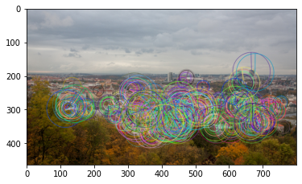
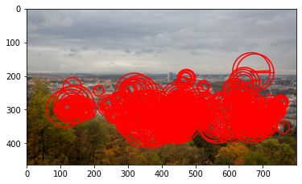
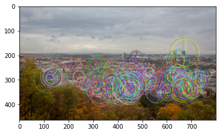
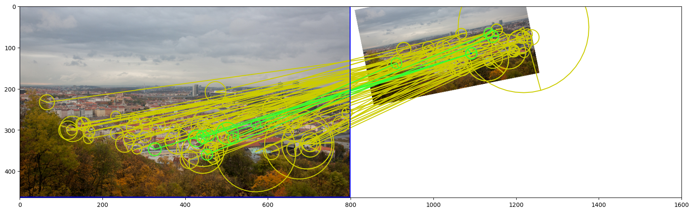

kornia_moons


Conversions between kornia and other computer vision libraries formats, mainly OpenCV.
What's inside
- Keypoint / LAF conversions — OpenCV
cv2.KeyPoint↔ kornia local affine frames (LAFs), handling the differing scale and orientation conventions (mrSize=6.0for SIFT,1.0for ORB):laf_from_opencv_SIFT_kpts,opencv_ORB_kpts_from_laf, … - Match conversions — kornia match tensors ↔
cv2.DMatchlists:cv2_matches_from_kornia,kornia_matches_from_cv2 - OpenCV detectors as kornia modules —
OpenCVDetectorKornia,OpenCVFeatureKornia,OpenCVDetectorWithAffNetKornia(with kornia AffNet shape refinement) - Visualization — LAFs (
visualize_LAF), matches with inliers/epipolar lines/reprojected corners (draw_LAF_matches), plain point matches from LoFTR-style matchers (draw_point_matches), epipolar errors, and SOLD2 line segments (plot_lines,plot_color_line_matches)
Install
pip install kornia_moons
Quick start: keypoint conversion
import matplotlib.pyplot as plt
import cv2
from kornia.image import image_to_tensor
from kornia_moons.feature import laf_from_opencv_ORB_kpts, opencv_ORB_kpts_from_laf
from kornia_moons.viz import visualize_LAF
img = cv2.cvtColor(cv2.imread('data/strahov.png'), cv2.COLOR_BGR2RGB)
det = cv2.ORB_create(500)
kps, descs = det.detectAndCompute(img, None)
out_img = cv2.drawKeypoints(img, kps, None, flags=cv2.DRAW_MATCHES_FLAGS_DRAW_RICH_KEYPOINTS)
plt.imshow(out_img)
lafs = laf_from_opencv_ORB_kpts(kps)
visualize_LAF(image_to_tensor(img, False), lafs, 0)
kps_back = opencv_ORB_kpts_from_laf(lafs)
out_img2 = cv2.drawKeypoints(img, kps_back, None, flags=cv2.DRAW_MATCHES_FLAGS_DRAW_RICH_KEYPOINTS)
plt.imshow(out_img2)



Matching and visualization
import cv2
import numpy as np
import torch
import kornia
from kornia_moons.feature import laf_from_opencv_SIFT_kpts
from kornia_moons.viz import draw_LAF_matches
det = cv2.SIFT_create(100)
img1 = cv2.cvtColor(cv2.imread('data/strahov.png'), cv2.COLOR_BGR2RGB)
Hgt = np.array([[0.5, 0.1, 10], [-0.1, 0.5, 10], [0, 0, 1]])
img2 = cv2.warpPerspective(img1, Hgt, img1.shape[:2][::-1], borderValue=(255, 255, 255))
kps1, descs1 = det.detectAndCompute(img1, None)
lafs1 = laf_from_opencv_SIFT_kpts(kps1)
kps2, descs2 = det.detectAndCompute(img2, None)
lafs2 = laf_from_opencv_SIFT_kpts(kps2)
match_dists, match_idxs = kornia.feature.match_snn(
torch.from_numpy(descs1).float(), torch.from_numpy(descs2).float(), 0.98)
H, mask = cv2.findHomography(
kornia.feature.get_laf_center(lafs1[:, match_idxs[:, 0]]).numpy().reshape(-1, 2),
kornia.feature.get_laf_center(lafs2[:, match_idxs[:, 1]]).numpy().reshape(-1, 2),
cv2.USAC_MAGSAC, 0.5)
draw_LAF_matches(lafs1, lafs2, match_idxs, img1, img2, mask,
draw_dict={"inlier_color": (0.2, 1, 0.2),
"tentative_color": (0.8, 0.8, 0),
"feature_color": None,
"vertical": False}, H=H)

Learn more
- Local features tutorial — conversions in both directions, matches, detector wrappers
- Visualization tutorial — matches, epipolar geometry, SOLD2 line segments
- API reference
Development
pip install -e ".[dev]"
pytest tests # unit tests
pytest --nbmake docs/feature.ipynb docs/viz.ipynb # run the docs notebooks
mkdocs serve # preview docs locally